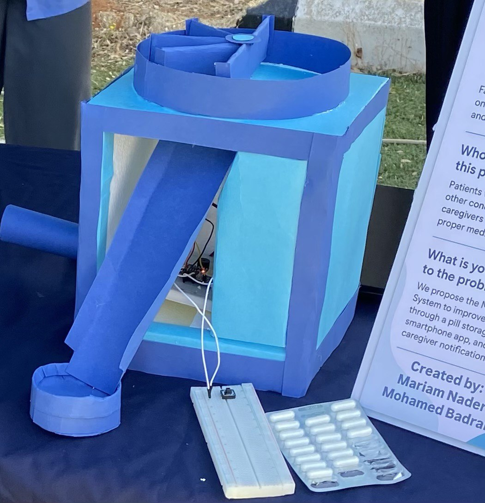

Senior Project
MedAlert

Smart system to monitor drug storage conditions and remind patients to take medication.
Computer Engineering Graduate
Detail-oriented developer with experience in web and mobile development, database systems, tutoring, and engineering projects. Passionate about building clean, user-focused digital products.
Focus
Next.js, JavaScript, MySQL, Supabase, Flutter, PHP
I am a Computer Engineering graduate from the Lebanese International University and currently pursuing a Master’s degree in Computer and Communication Engineering. I enjoy combining technical knowledge with practical problem-solving to build software systems and user-friendly applications.
My background includes mobile development, web components, database projects, tutoring, and hands-on engineering work. I am motivated, organized, and excited to contribute to a strong technical team.
Lebanese International University • 2025 – Present
Lebanese International University • 2021 – 2025 • GPA: 3.7/4.0
Cedars Software Solutions • Sep 2025 – Nov 2025
Freelance • 2022 – Present
Remote • 2024 – Present
Senior Project

Smart system to monitor drug storage conditions and remind patients to take medication.
Database Project
Wedding booking system using XAMPP and MySQL to manage clients and reservations.
Java GUI
Desktop application built with Java GUI for event planning and service selection.
Logic Design

Designed a 2-bit Arithmetic Logic Unit using digital logic components to perform decrement and shift operations.
Electronics
Transistor-based circuit to detect and alert when water reaches a specific level.
Simulation
Medication storage and voice reminder system simulated using Tinkercad.
Ready to contribute to a dynamic team and build impactful projects.
You can later add your GitHub, LinkedIn, CV button, and project screenshots here.